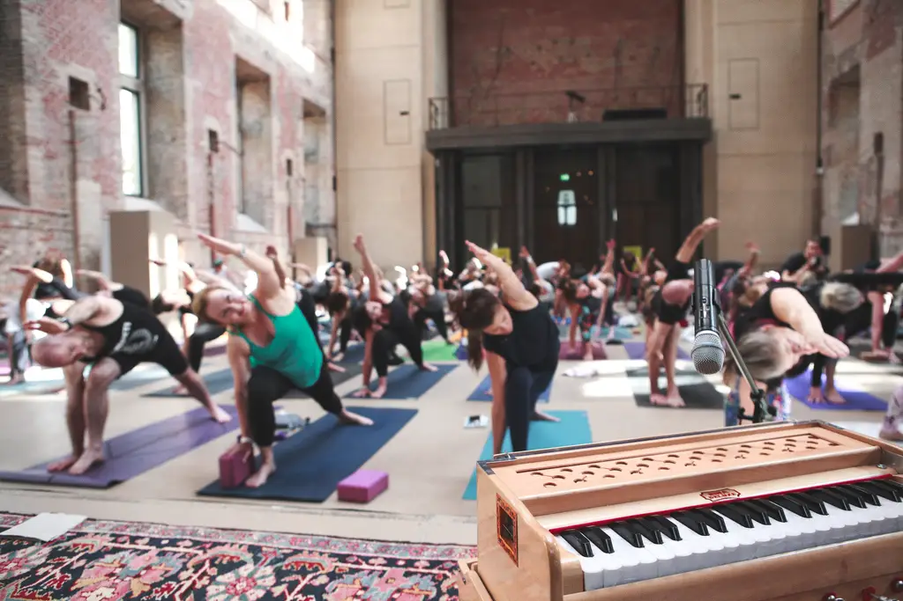
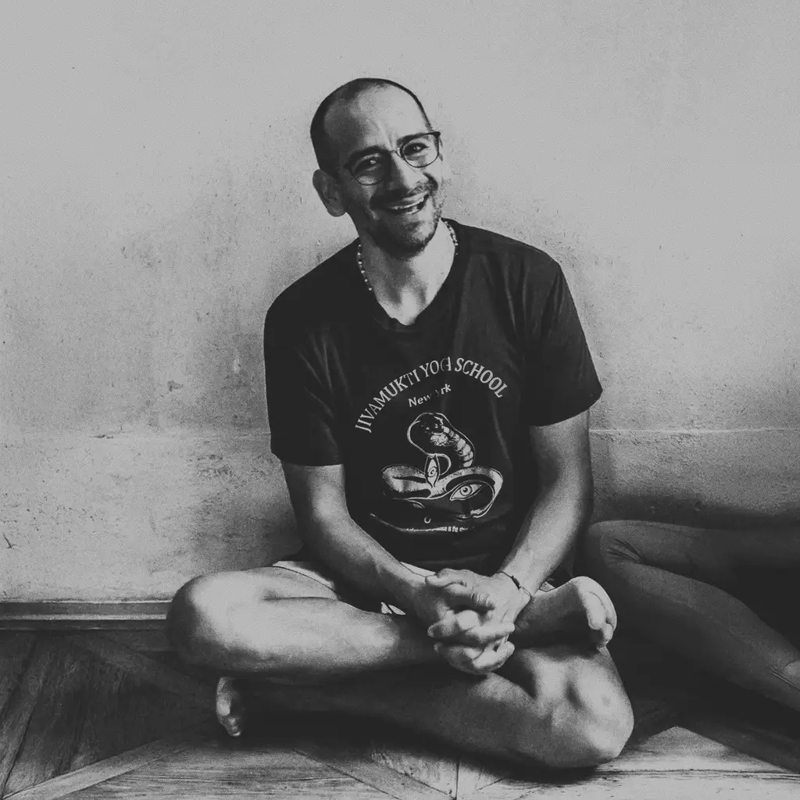

LINE UP

MEET THE TEACHERS & ARTISTS OF TRIBE 2026
For Tribe 2026 we invite the community to
Practice with Advanced Certified and Senior Jivamukti Yoga Teachers from across the globe, including renowned yogis from London, New York, Barcelona, Berlin, and various other corners of our precious planet. This remarkable lineup features Teacher Training faculty and Studio directors with years of experience sharing the Jivamukti Yoga method.
JOIN USMeet Our Teachers

Sharon Gannon
Woodstock, NY
Jules Febre
Berlin
Rima Rabbath
New York City
Olga Oskorbina
Barcelona

Juan Sierra
Sacred Valley, Peru
Andrea Kwiatkowski
Cambridge, UK

Magali Lehners
Luxembourg
Dana Sertel
Berlin
Jutta Mele-Maurer
Rome
Joshua Greene
Special Guest
Jamie Logan
Special Guest
Deva Premal & Miten
Special Guests

Emma Henry
DOWNLOAD THE OFFICIAL TRIBE APP
to book your tickets and reserve your spot for classes and sessions